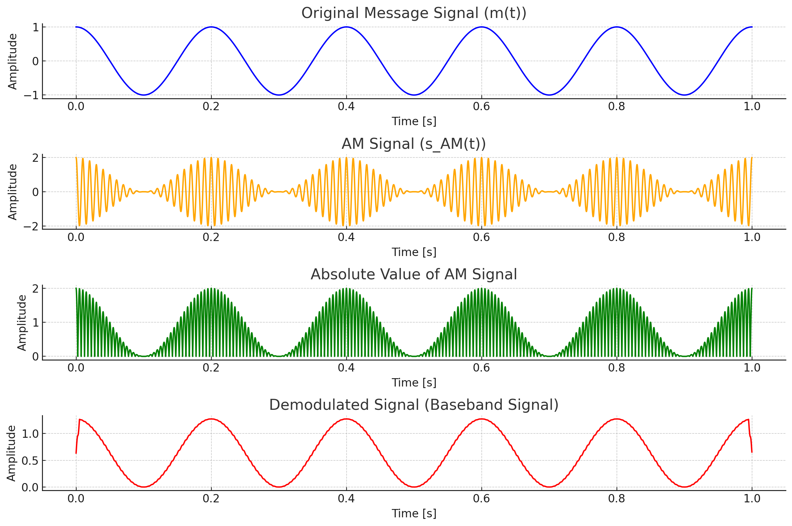
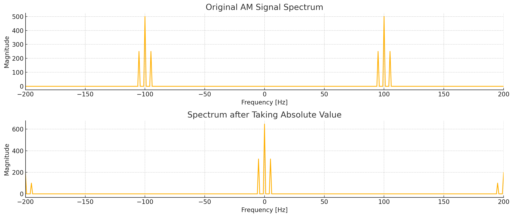

学习通信原理的过程中突然注意到这个问题，觉得简单有趣记录一下
包络检波在时域上是直觉，我们用手指都能简单画出结果，但是它在数学上的过程是如何被描述的呢？

1. 引入解析信号
解析信号（Analytic Signal）是一种工具，帮助我们更清楚地分析信号的频率成分。
给定一个实信号 $s(t) $，它的 解析信号 定义为：
$$ s_a(t) = s(t) + j \hat{s}(t) $$ 其中， $\hat{s}(t) $ 是 $ s(t) $ 的 希尔伯特变换 对于我们的调制信号： $$ s(t) = [A + m(t)] \cos(\omega_c t) $$ 有希尔伯特变换： $$ \hat{s}(t) = [A + m(t)] H[\cos(\omega_c t)] = [A + m(t)]\sin(\omega_c t) $$ 则 ： $$ \begin{aligned} s_a(t) &= s(t) + j \hat{s}(t) \ &= [A + m(t)] [\cos(\omega_c t) + j \sin(\omega_c t)] \ &= [A + m(t)] e^{j \omega_c t} \end{aligned} $$ (其实就是 $\cos(\omega_c t) = \Re{e^{j \omega_c t}}$)
2. 为什么对信号取绝对值就能实现搬移？
通过实验，对AM调制信号过个二极管，也就是取绝对值，我们就有如下频谱变化：

这就是所谓包络，包络定义为解析信号的幅度，即：
$$
E(t) = |s_a(t)| = \sqrt{[\text{实部}(s_a(t))]^2 + [\text{虚部}(s_a(t))]^2}
$$
代入解析信号：
$$ \begin{aligned} E(t) &= \left| [A + m(t)] e^{j \omega_c t} \right| \ &= |A + m(t)| \cdot |e^{j \omega_c t}| \ &= |A + m(t)| \end{aligned} $$
由于 $e^{j \omega_c t}$ 的幅度为 1，因此包络为：
$$ E(t) = |A + m(t)| $$
3. 包络检波过程
- 检测包络：通过解析信号计算或物理电路（如二极管和 RC 滤波器），提取包络 $E(t)$。
- 去除直流分量：由于包络中包含了载波的直流分量$ A $，需要通过高通滤波或减去平均值来得到原始信号 $m(t)$。
因此，恢复出的信号为：
$$ m_{\text{recovered}}(t) = E(t) - A = |A + m(t)| - A $$ 如果确保调制信号$ m(t) $ 的幅度使得 A$ + m(t) \geq 0 $ (不过度调制)，那么绝对值运算不会影响信号的形状，得到的就是原始的基带信号。
4. 欸？不对！
回到一开始的时域图，我们一眼就能看出，明显还有大量的高频信号残留，而不是我们期望的低频基带信号，包括频谱也是，我们能在两端隐约看见高频信号的一角，这是怎么回事，为什么和解析信号计算的不一样？
解析信号与实数信号在频谱处理上本质上不同，这导致了绝对值运算的不同表现。
在频域中，时域的非线性操作（如取绝对值）对应于频域中频率成分的相互作用。特别是，对于调幅信号 $\cos(\omega_c t) $，取绝对值后的结果是引入了新的频率分量，特别是二倍频和更高次谐波。这是因为绝对值运算改变了信号的对称性和周期性。
举个简单例子，假设我们对 $ \cos(\omega_c t) $取绝对值，它可以表示为： $$ |\cos(\omega_c t)| = \frac{2}{\pi} - \frac{4}{\pi} \cos(2 \omega_c t) + \text{高次谐波} $$
而解析信号是一种特殊的信号，它通过希尔伯特变换去除了负频率成分，只保留正频率。
$$ |e^{j \omega_c t}| = 1 $$
解析信号的幅度（即绝对值）是： $$ |s_a(t)| = \left| [A + m(t)] e^{j \omega_c t} \right| = |A + m(t)| $$ 我们看到，解析信号的绝对值只包含了调制信号$ A + m(t) $，没有包含任何载波频率的成分。之所以这样，是因为解析信号已经将负频率部分去掉了，而取绝对值操作对频率没有引入新的高频成分。因此，解析信号的绝对值等价于包络。所以我们在包络检波时，除了滤除直流分量，还要试用低通滤波器。
参考文献
- Haykin, S. (2001). Communication Systems. John Wiley & Sons.
- Proakis, J. G., & Salehi, M. (2007). Fundamentals of Communication Systems. Pearson.